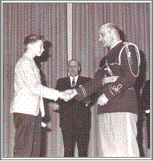

|
CLICK (gently!) on Granny's
|
 |
to close this page.
|
Looking back to childhood days, I remember that Hawaiian music was much more popular on radio than many other types of music. My mother loved the steel guitar, so she purchased a very inexpensive guitar for me - I was nine years old - and paid the astronomical sum of $1 for music lessons. It was a real sacrifice for her to put out this amount of money, considering the small income my family had. Each Saturday, I walked at least two miles to get instruction on this fascinating instrument - there was no money for streetcar fare. My biggest moment came when I, along with several other instrumentalists, was asked to play on the radio. At age 14 when I started to go to church, I often played a solo or with other instrumentalists. By then I had graduated from the old wooden guitar to a steel-plated Dobro guitar. If I had only known that in the future, this type of guitar would be a collector's item! When I was eighteen and earning my own money, I splurged on a modest electric guitar. It was awesome to play this instrument - volume could be adjusted, and the sliding tones of the steel guitar were enhanced. When my husband became a pastor, I was able to use my guitar for many occasions. In one church we had a fantastic orchestra.
Here, our children merit mention. Gerhart and Susan began their musical career on a piano. Later, Gerhart changed to a flute, and Susan to a violin. Gerhart won first place in a district wind-instrument festival competition. The prize was $15.00 - wow - what a fabulous sum of money in those days. He was rich!

In the 1960's when we were together to play trios. I didn't play the piano in public - I played, instead, my steel guitar. The three of us enjoyed playing as a trio for many meetings. Susan wanted a Spanish guitar, so one Christmas we presented her with an inexpensive model. Very musical, Susan picked up the guitar and took off, without a lesson! In High School, she was chosen to be the recipient of the Music Achievement Award. I played an accordion reasonably well, and when we served a church in a rural area, I gave music lessons on the accordion, as professional music teachers lived quite far away. I loved playing the mandolin as well.
As for my husband Fred. Well, what good was it for us to produce music without an audience? So he has been the "audience" over the years. He did try several instruments, but it was not to be. Because of my physical disability, I have needed his strength to carry amplifier and guitar from place to place. He was always proud of his musical family.
And then in the 1960s, two dreams came true: I purchased an electric mandolin. The church we were serving had a mandolin player, and mandolin duets were magnificent. The second dream was the purchase of a double-necked Fender steel guitar. No longer did I have to cradle a lap guitar. The basic reason for the double-neck is that you can put one type of tuning on one neck, and a more exotic type of tuning on the other neck. True professionals can produce some magnificent chord arrangements to make a song more beautiful.
the colour of my guitar is a deep maroon.
It is now 2004. Sadly, our son has not played his flute for years. Our daughter rarely plays her violin because of the discomfort a jaw operation has caused. But she still plays the guitar and is now tackling a keyboard. Alas, none of my four grandsons play an instrument. I have preached to them, "Sports last for a few years; music can last a lifetime."
Weakening muscles in my arms caused me to give up the accordion, and by now, the mandolin has also been put aside. But I can still play my precious steel guitar. Every Sunday I join with other instrumentalists to play at the Evergreen Baptist Chapel in White Rock, BC. We play the prelude, the offertory, the worship hymns; we play for special programs throughout the week. (Look under the link XYZ SENIORS, sub-section "Note"worthy.)
It was Christmas in the 1960's. Gerhart and I were going to play a musical duet for the Christmas day service "O Holy Night." I felt we had not practiced enough, but Gerhart differed with my opinion. He opted to go out rather than practice. So, we started out on our special number. I could sense that something was going wrong. About a third of the way through, Gerhart lost his way.
He stood in front of me, looked at me with a glare, and said, "What's wrong, Mom?" The comment delighted the festive congregation. I was so glad my back was to the audience, because my face showed utter dismay. We started over again and made it through - barely.
NOW - DOES ANYONE WANT TO GUESS WHAT I SAID TO GERHART WHEN WE GOT HOME? (HEY, MOM, TAKE IT EASY. IT WAS, AFTER ALL, CHRISTMAS DAY WHEN THERE IS SUPPOSED TO BE "PEACE" ON EARTH!)
|
CLICK (gently!) on Granny's
|
|
to close this page.
|